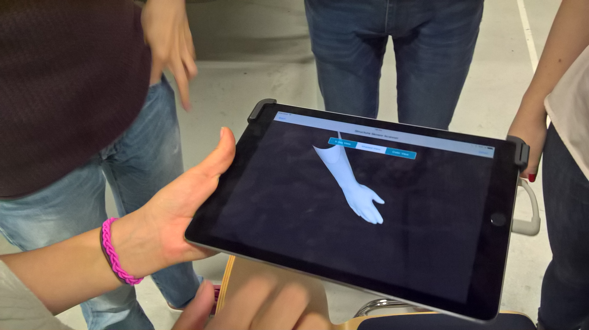
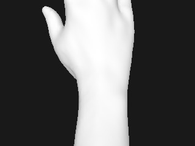
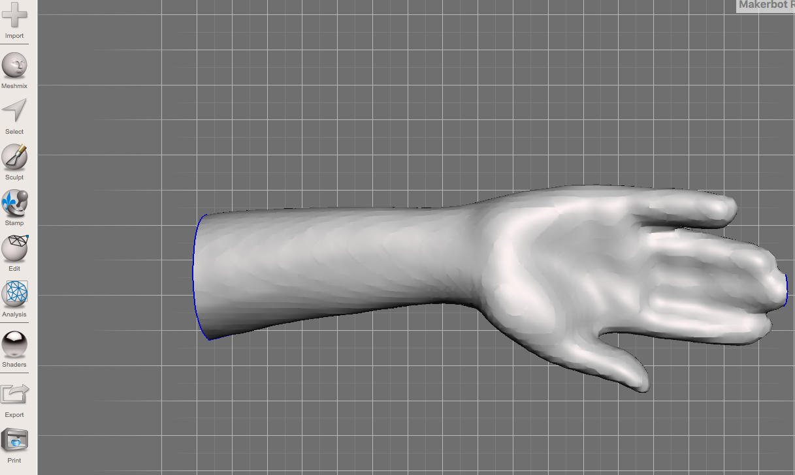
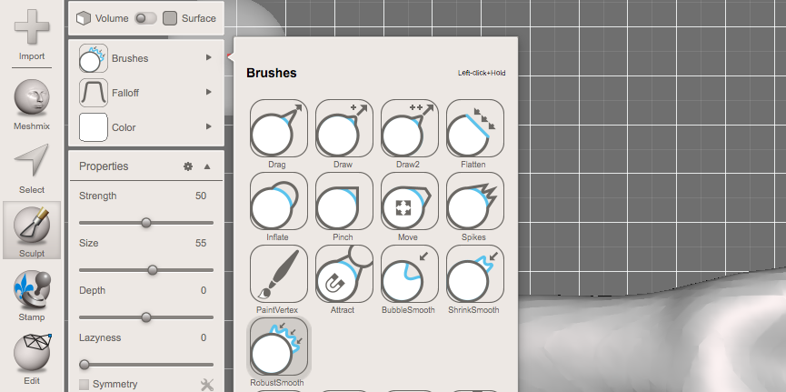
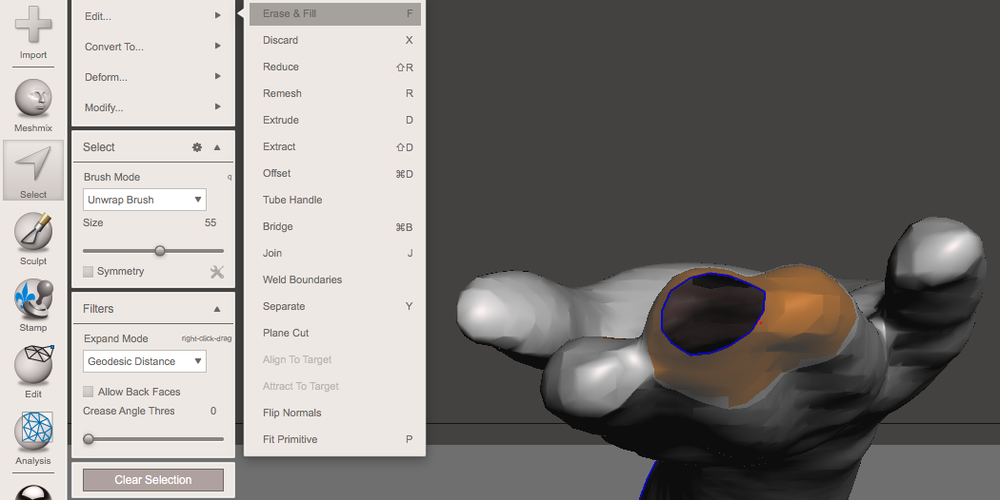
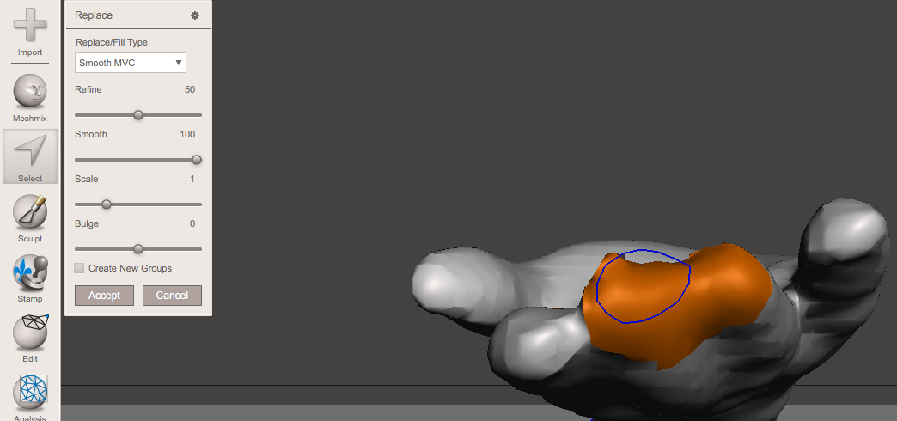
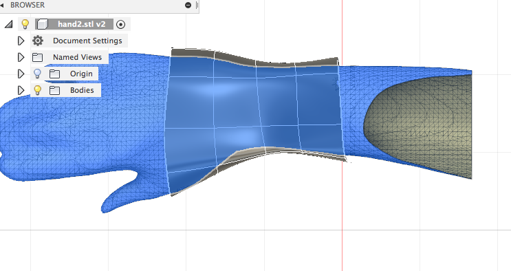

3D scanners can be used for medical purposes,as a radar control,changing the appereance of actors and further more. It can be used for many different purposes. In this example below the picture shows a hand.For that the user has to go around the hand slowly and without moving it too fast. The surface of the scanned object has to be even otherwise it can come to errors in the further process, meaning the scan consists of wholes which have to be corrected with the program meshmixer afterwards.
 
This week the usage of meshmixer is introduced to us and how to import the final model to Exact Flat in order to laser-print it. In this case a hand is been prepared and corrected for further process. It is been sculped with a ceratin brush to straighten neven fields and then wholes which are not scanned properly before.
 
 When this is done the hand is transported to Fusion 360 where it is circled by a zylinder and extruded so it can be formed following the hand's shape. Which looks like this:
Now it can be exported to Exact Flat program, cutted into several pieces which enables laser-printing.